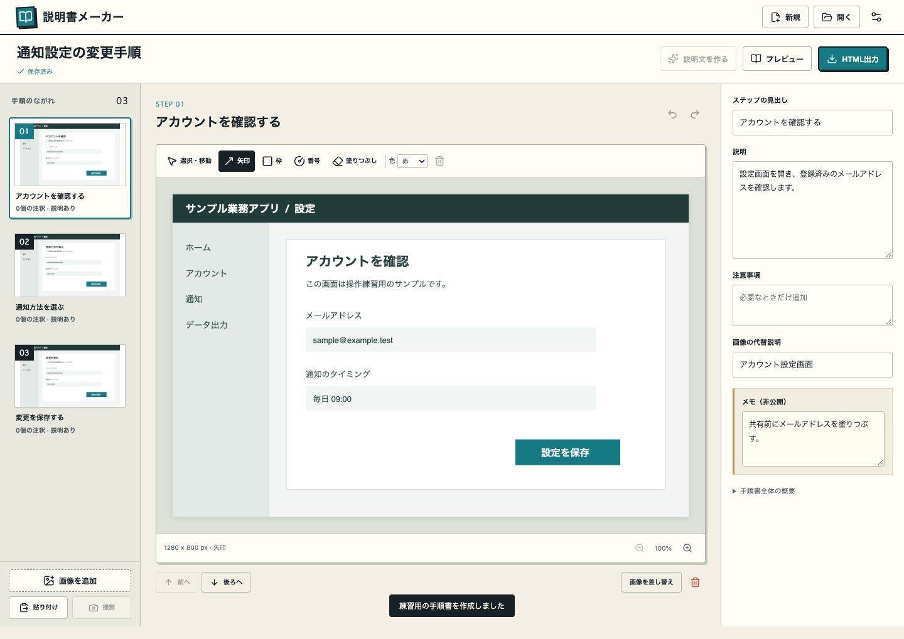

説明書メーカー
スクリーンショットから、手順書へ。
撮って、
印をつけて、
伝わるかたちに。
画面と説明を一枚ずつ集めて、
そのまま配れるHTMLの手順書に。
いつものWindowsで使う、小さな道具です。
Windows 11 · x64 · v0.1.3 試用版

HOW IT WORKS
操作を、4つの手順で残す。
-
01
画面を撮る
全画面、ウィンドウ、自由領域。ショートカットで撮って、手順に取り込めます。
-
02
見てほしい場所に印
矢印、枠、番号を追加。共有する画像の隠したい部分は、塗りつぶせます。
-
03
短い説明を添える
見出しと説明を書いて、順番を整える。自分用のメモは、公開する説明と分けられます。
-
04
HTMLで渡す
画像を含む、ひとつのHTMLに書き出し。受け取った人はブラウザで読めます。
CAPTURE SHORTCUTS
作業の流れを止めずに。
- 画面全体
- Ctrl + Alt + F
- ウィンドウ
- Ctrl + Alt + W
- 自由領域
- Ctrl + Alt + S
キーは設定から変更できます。画像ファイルの追加や、クリップボードからの貼り付けにも対応。
KEEP IT LOCAL
作る場所も、保存先も、
あなたのPCに。
編集データはローカルのフォルダに保存。書き出したHTMLは、ネットにつながっていない環境でも閲覧できます。
共有するときは、書き出したHTMLを渡してください。編集用フォルダには、塗りつぶす前の元画像も残ります。
TRY IT ON WINDOWS
まずは、一枚から。
Windows 11 / x64 向けの試用版です。
ZIPをすべて展開し、Manual Maker.exe
を起動してください。
- 「手順書を作る」で保存先を選ぶ
- 画面を撮影し、注釈と説明を追加
- プレビューで確認して「HTML出力」
試用版の現在の状態と、困ったとき
撮影・注釈・説明編集・HTML出力を実装しています。v0.1.3ではウィンドウ一覧が一時的に欠ける症状への対策と「更新」を追加しました。実際のWindows PCでこの症状が解消するかは確認中です。
一覧に出ない場合は「更新」をお試しください。診断記録は
%APPDATA%\Manual Maker\capture-sources.json
に保存されます。ウィンドウ名を含みますが、画像は記録せず、外部送信もしません。
文章は入力欄を離れると保存されます。LLM・MCP連携は試験段階です。まずは手動での手順書作成にお使いください。
旧版から切り替える場合は、トレイから旧版を終了してから起動してください。初回の試用は、短い手順書で保存・撮影・出力をご確認ください。
詳しい試用手順 ↗